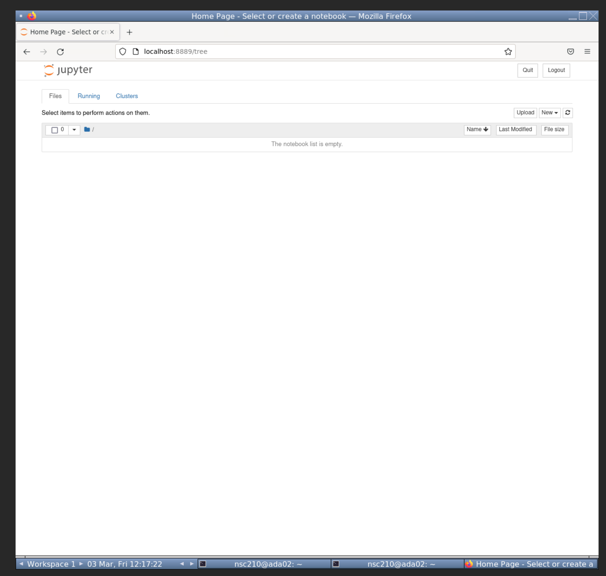
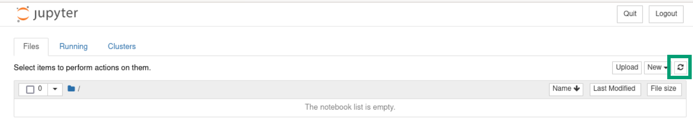
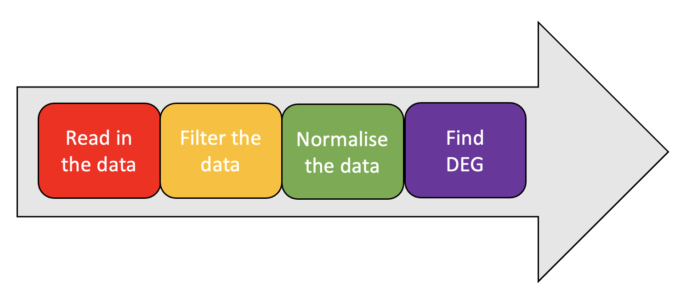
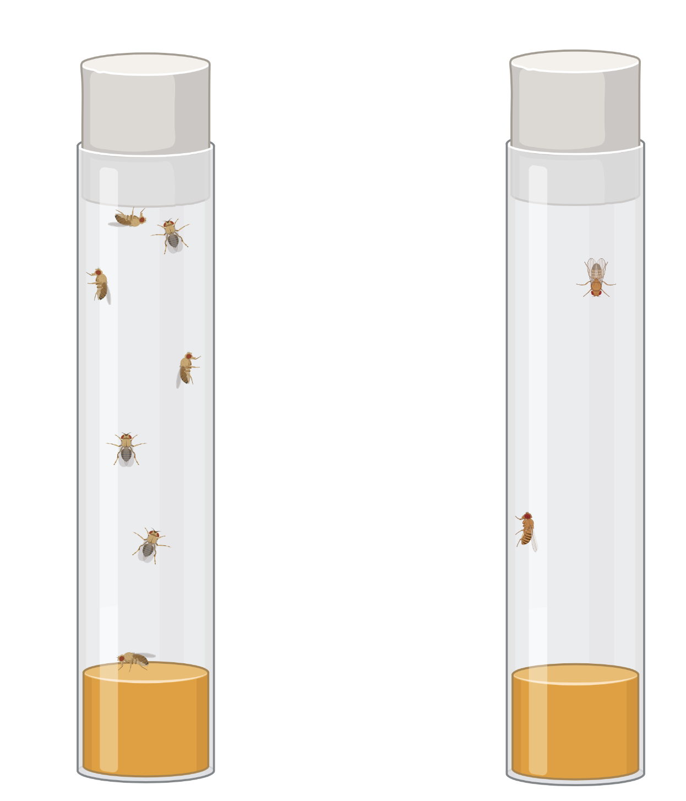
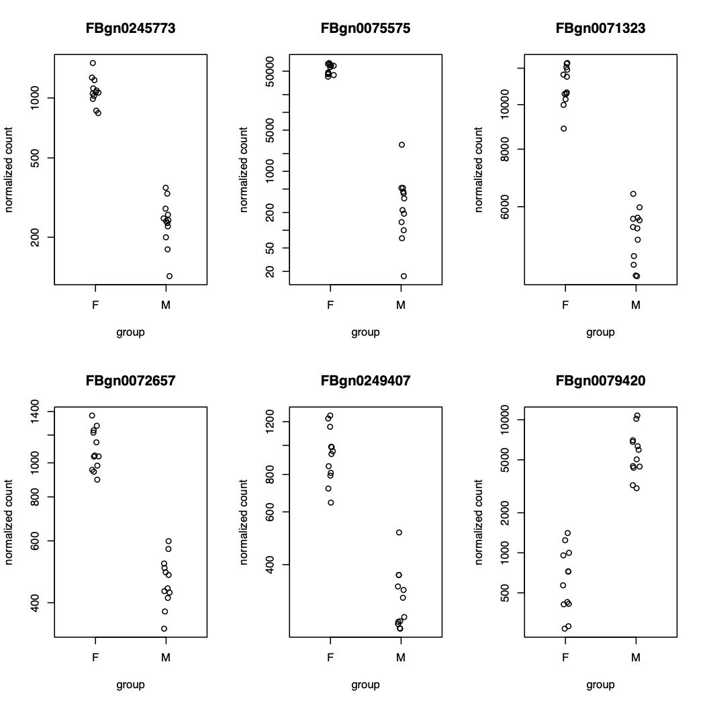
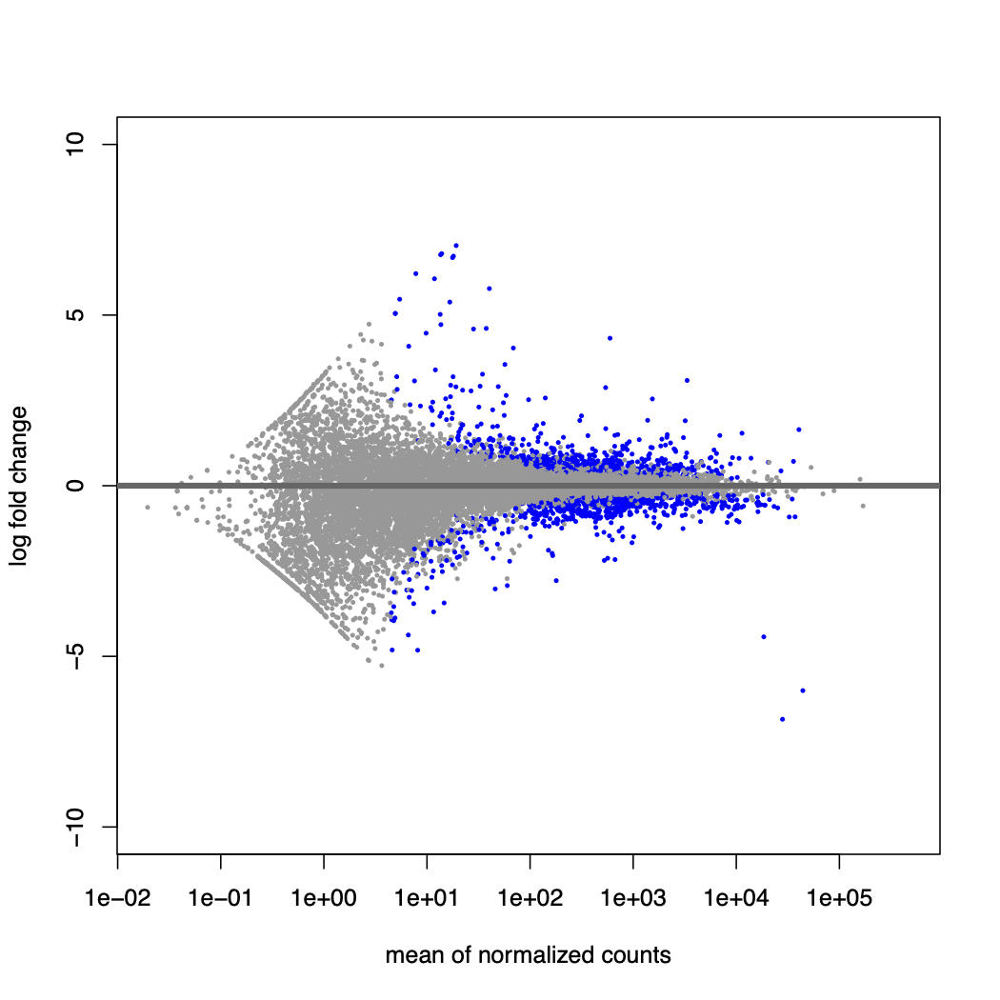
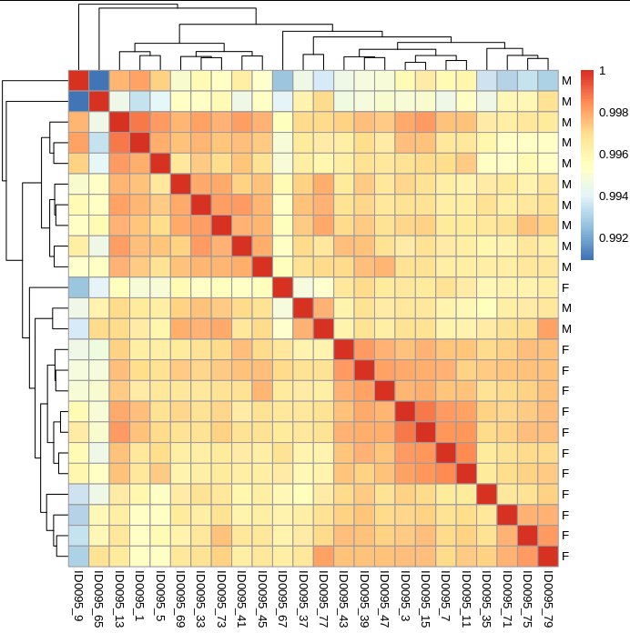

Chapter 7 Differential Gene Expression using DeSeq2
7.1 Jupyter

Jupyter-notebook is a nice browser based method to write, edit, and run code. It was initally created for Python coding, but has since branched out to many other languages, such as R.
We are using it in this workshop for a variety of its properties:
- It is popular and well maintained.
- It is lightweight. Other heavier weight programs, such as RStudio, would struggle in our HPC due to the graphical and CPU load.
- It is interactive and displays code output.
- It allows for easier annotation, editing, and debugging than the command line.
- It provides a graphical interface for changing directories and choosing files.
Before carrying out any analysis we will go through a quick tutorial of jupyter-notebook.
But first we will change directories so we have the data we need available for the next two chapters.
7.1.1 Open Jupyter-notebook
The first step is to open jupyter-notebook. Run the below command in your (rnaseq) environment.
This will open jupyter-notebook in firefox. We won't need to access the linux terminal anymore. Leave the terminal running jupyter-notebook and full screen your firefox so you should see something like below.

7.1.2 Create R notebook
The next step is to create a R notebook.
- Click on the "New" button towards the top right, right of the "Upload" button.
- From the dropdown click "R" below "Python 3 (ipykernel)".
This will open up a new R notebook like below.

7.1.3 Cells and code
Jupyter-notebook uses cells (the gray boxes) to separate code. This is very useful to compartmentalise our code.
There will already be one cell. Within the cell, type in the below commands.
When pressing enter in cells it will create a new line. To run all commands in a cell press CTRL + enter.
Run your current cell and you should see something like below.

7.1.4 Create new cells
You can create new cells by 2 different means.
- Press the
+button on the tool bar (between the floppy disk and scissors ). This will add a cell below your currently selected cell. - Click on the
Insertbutton and use the dropdown to add a cell above or below your currently selected cell.
Tip: Hover over the toolbar icons to display a text based description of its function.
With that knowledge add a second cell below the first cell. Add the following code to your second cell but do not run it.
Tip: Notice there are green lines around your selected cell.
Insert a third cell and add the following code to it. Do not run the code.
7.1.5 Running code
Try to run the code in the third cell. There should be an error as we have not created the objects num_1 & num_2. We have only written the code for these objects but not run them.
We can run all the code in a notebook starting from the first cell to the last cell.
To run all cells from the start:
- Click on the "Cell" button.
- Click "Run All" from the drop-down options.
You should then see something like the below in your notebook.

There is no output printed for cell 2 because we are assigning variables. However, the correct output for Cell 3 is below it. This is because the variables were assigned in cell 2 before cell 3 was run.
7.1.6 Saving the file

As with RStudio and other good coding interfaces we can save our notebook.
First we should rename the file. Rename the notebook to "jupyter_tut":
- Click on the name of the notebook, currently called "Untitled".
- This is at the very top of the notebook, right of the Jupyter logo.
- A pop-up called "Rename Notebook" will appear. Change the Name to "jupyter_tut".
- Click "Rename".
Now we can save the file. Two methods to save are:
- Click the floppy disk on the toolbar.
- Click on the "File" button. Click "Save and Checkpoint" from the dropdown options.
7.1.7 Title cells with markdown
We will be using multiple notebooks in this workshop. We will also have multiple sections per notebook. It will be useful to create header cells with markdown to create visual separation of the different sections.
To add a header cell to the top of our notebook:
- Create a new cell at the top of the notebook.
- Click on the "Code" drop down and select "Markdown".
- The "Heading" option no longer works.

- Add the following to the "Markdown" cell to create a first level header.
- Ensure you have a space between the
#and header text ("Tutorial").
- Ensure you have a space between the
Great, we can now add nice headers in our notebooks. Save the notebook once more before carrying on to the next section.
You won't need to know more about Markdown but if you are interested please see the Markdown guide.
7.1.8 Close the notebook
To close the notebook:
- Click on "File".
- From the dropdown options click "Close and Halt".
When you are back in the file explorer page you may not yet see the new file you saved. If so, you will need to refresh the page with the Refresh button towards the top right.

With that quick tutorial of jupyter-notebook we can start our differential expression analysis.
7.2 R

As mentioned above we will be using R to run the differential gene expression analysis within Jupyter Notebooks. If you are not familiar with R we have described some of the common terminology and put a few hints to help you understand how to run a few basic commands in Chapter 2 in our supplemental bookdown. Feel free to look at this first before continuing.
7.3 Introduction to DGE and DESeq2
Differential gene expression (DGE) is an analysis used to find genes that are differentially expressed in response to a treatment or variable and it estimates the size and direction of the effect. Most RNA-seq experiments involve comparing two (or more) treatments. The method we will be using uses generalised linear models to explicitly model the count data.

We will be using the R package DESeq2 to run the differential expression analysis. DESeq2 performs differential expression analysis using a table of count data for each gene per sample. It tests for differential expression based on a model using the negative
binomial distribution and uses a shrinkage estimation for dispersions and fold changes to improve stability and interpretability of estimates. For more information see the publication, manual and vignette.
To summarise the general workflow we will be following we will:

Read the data into R. This comes in the form of 2 files, a count data file and a metadata file. We then merge these together into a single data structure.
Filter the data. Many genes have either no or virtually no counts recorded for them. These can cause problems for the statistical analysis downstream so are often removed. (Plus, if they’re not expressed in any treatment they won’t be differentially expressed).
Normalise the data. In addition to interesting biological reasons why counts of reads from genes will be different, there are plenty of dull technical reasons why they differ that we have to control for. Normalisation controls for the number of reads in total from the library, the fact that genes at a low expression level tend to vary more than highly expressed genes, and that different genes have different amounts of variation. DESeq2 uses a modelling approach to perform normalisation, internally correcting for library size.
Find differentially expressed genes. This is where we identify genes that differ systematically between treatments.
7.4 The dataset

To do this we will use a pre-prepared data set which contains multiple individuals belonging to different treatment groups needed for DGE analysis. The data comes from Mike Ritchie and Paris Veltsos, University of St Andrews. The full experiment involved 96 samples, but here we just use subsets of these. Drosophila were selected for many generations with either one or many tissue samples taken from males or females, head or thorax and from virgin or mated flies. In this subset there are three regimes:
B: Baseline population
M: Multiple mates. These were flies with elevated polyandrous activity.
E: Evolved. These flies were forced to have monogamous activity.
| Factor | Value |
|---|---|
| Regime (Base, Multiple mates, Evolved) | B, M, E |
| Sex (Male or Female) | M, F |
| Status (control or virgin) | C, V |
| Tissue (Head or body) | H, B |
| Line (replicate selection lines) | 1 - 4 |
The subset we will use contains 24 samples. All samples are head tissue (H), from males (M) and females (F), grown under three different regimes (B, M and E).
Important note: In real experiments you should have biological replicates. The absolute minimum should be 3. It will be difficult to distinguish any real patterns of expression between conditions from background biological variation present within conditions without sufficient replicates. Even using 3 replicates, it is likely that you can expect false-positives within your dataset and it will be harder to detect genes with smaller effects.
7.5 Differential expression analysis
Create a new notebook called "Chp07-Differential_gene_expression".
- Add a markdown cell with the first level header: # Differential gene expression
- Add the below to a code cell and run the cell to load the DESeq2 library.
7.5.1 Loading in the data
Create a new code cell. First we will read in a table which contains the count data per gene for all the individuals we will be examining.
# The row names are your gene ids
counts<-read.table("genecount.set1.tsv", header=T, row.names = 1)
# Print the start of the dataframe to look at its structure.
head(counts)In a new cell we will read in the metadata for the samples. This table includes information about the regime, sex, status, tissue and line for each sample (for more information see above).
From now on you will get less instructions on your notebook structure. Please create your own coding and markdown cells where you think appropriate.
We are going to run a simple analysis to examine which genes are differentially expressed between males and females (i.e. sex-biased genes). Sex-biased gene expression is common in animals and sex-biased genes are thought to drive many behavioural, physiological and morphological differences between the sexes.
In our model we need to make sure that sex is treated as a factor. To do this we can run the following command.
It is essential that the order of the sample names in your metadata and count tables are in the same order. We can check this by comparing whether all the row names in our metadata match the column names in our count data.
Run the following function. If TRUE is printed to the screen then all the sample names match and we can proceed.
Now we set up our DESeqDataset, which will store our read counts and metadata. We must also specify an associated design formula, which expresses the variables which will be used in modeling. In this instance we are interested in how sex affects gene expression patterns so we specify this as a term of interest after a tilde (~) in our formula design.
7.5.2 Filtering the data
We will now filter the data to remove genes that have extremely low expression in all samples. You do not have to do this step but there are a couple of reasons why this can be useful:
- removing genes (rows) which have very few reads we can reduce the memory needed to process the dds data object
- this will speed up the analysis.
In this case we will remove low count genes with less than 10 reads in total across samples. (A stricter filtering is applied to increase power via an independent filtering on the mean of normalised counts when we run the results function further down).
# check the number of genes contained in the dataframe
nrow(dds)
# we start with 16,707 genes
# remove genes with less than or equal to 10 reads across all samples
keep <- rowSums(counts(dds)) >= 10
dds<- dds[keep,]
# re-count the number of genes we have retained after filtering
nrow(dds)
# we have 15,675 genes after filtering- How many genes do we have after filtering?
Note: The reference level of for factors used within the model are by default based on alphabetical order. It might not matter which factor is set as the reference in your analysis but if for example you had a control/wild type group it would make sense to set this as the reference to compare against. One way you can tell R how to set your reference is using the relevel function. For example if we had a term called condition and we wanted to make sure our wild type (wt) samples were set as the reference compared to the mutant (mt) we could do this using the following command:
dds$condition <- relevel(dds$condition, ref = "wt"). This would mean that positive fold changes in gene expression in our results would mean that expression was higher in the mutant. You would need to do this before running the DESeq function below for the re-leveling to be reflected in your results.
7.5.3 Running the analysis and obtaining the DGE results

Now we will run the DESeq function on our filtered DESeqDataSet. This function performs a differential expression analysis based on the negative binomial distribution. It will:
- estimate size factors
- estimate dispertions
- fit a negative binomial general linear model and wald statistics
For more details of each step you can check the help section of the DESeq2 help using:
You can also read more about the estimation steps here or in the DESeq2 publication.
We will now extract the results table for our DGE analysis using the results function.
We can look at the start of our results object by running.
You can see we have several columns in our results:
- baseMean: the average of the normalized count values, dividing by size factors, taken over all samples
- log2FoldChange: the effect size estimate. It tells us how much the gene’s expression seems to have changed due to the "treatment". This value is reported on a logarithmic scale to base 2. (In this case a value of 1 means that the expression level for a gene in males is twice that in females).
- lfcSE: The log2 fold change estimate standard error (the uncertainty associated with the estimate)
- stat: Wald statistic
- pvalue: Wald test p-value (The p-value will be reported as NA if all counts for a particular gene are zero, or if the gene was excluded from analysis because it contained an extreme count outlier).
- padj: Benjamini-Hochberg adjusted p-value (This is a p-value adjusted to account for multiple testing. We need to apply a correction as we have run thousands of tests which means that the chance of getting a false significant result is much higher. For more info see this link.
We can summarise the results by running the following command.
This shows us that we have 646 genes with a positive log fold change (higher expression in males and lower expression in females)
How many genes have a negative log fold change (higher expression in females and lower expression in males)?We can order our results by the adjusted p-value to look at the most significant DEG.
Which gene has the largest log fold change difference of the top 6 genes shown?7.5.4 Plot the expression differences for the most significant differentially expressed genes
We can visually plot these genes by typing
par(mfrow=c(2,3))
plotCounts(dds, gene="FBgn0245773", intgroup="sex")
plotCounts(dds, gene="FBgn0075575", intgroup="sex")
plotCounts(dds, gene="FBgn0071323", intgroup="sex")
plotCounts(dds, gene="FBgn0072657", intgroup="sex")
plotCounts(dds, gene="FBgn0249407", intgroup="sex")
plotCounts(dds, gene="FBgn0079420", intgroup="sex")
You can see that of the 6 genes with the lowest adjusted p-values, 5 have negative log fold changes and have higher normalised counts in females compared to males, and 1 has a positive log fold change with higher normalised counts in males than females.
7.6 Visualising the results
We will now go through several different methods of visualising the results from our DGE analysis.
7.6.1 MA plot
We will first plot an MA plot. This gives us an overview of the experiment and how DESeq2 calls significant DEG. Each gene is represented by a dot. Genes with significant adjusted p-values (default < 0.01) are coloured in blue. This shows that DESeq2 will only call significant DGE in genes with a large average normalised count as only these genes contain sufficient information to be able to do so.

7.6.2 Volcano plot
One nice way to visualise your results is to plot a volcano plot.
# Make the basic volcano plot
with(res, plot(log2FoldChange,
-log10(pvalue),
pch=20, main="Volcano plot",
xlim=c(-10,10), col="grey"))
# Colour points light blue if padj<0.01
with(subset(res, padj<0.01 ),
points(log2FoldChange,
-log10(pvalue),
pch=20, col="#a6cee3"))
# Colour points dark blue if log2FC>1 and padj<0.01)
with(subset(res, padj<0.01 & abs(log2FoldChange)>1),
points(log2FoldChange,
-log10(pvalue),
pch=20, col="#1f78b4"))
This allows us to visualise the number of differentially expressed genes which are significant (light blue). We can also visualise how many genes have an expression level which is at least twice as high in males than in females (log2FoldChange>1) and those which are twice as high in females than in males (log2FoldChange<1).
In our case, we have a fairly even number of genes both up and down regulated in males compared to females.
7.6.3 Heatmap
Usually, the variation between samples within a sample group (within-group variation) is smaller than that between samples from different sample groups (overall variation) because the former consists of technical and biological variation only, while the latter also contains variation due to the effects of factors. When the factor effect is the dominant contributor of variation, the sample groups can be clearly separated. However, if the factor effect is weak compared to the technical and biological variation within sample groups, it will be difficult to discriminate groups from the data.
PCA and Correlation Heatmap plots visualise the outcomes of the assessment of the variation within and between sample groups.
Before we plot these we will transform the data. For the differential expression analysis we use raw counts but for visualisation and clustering purposes it is common to work with transformed data. There are two main ways suggested for transforming data for visualisation and clustering in DESeq2: VST (variance stabilising transformations) and the rlog (regularised logarithm). For more information see here. Here we will use the rlog transformation before plotting the Heatmap and PCA plots.
First use the rlog transformation to normalise the data.
The argument blind, refers to whether the transformation should be blind to the sample information specified by the design formula. This is not appopriate to use as we are expecting many of the genes to have counts which are explained by the experimental design we specified (i.e. sex), so we have set this argument to false.
We will use the package pheatmap to plot a heatmap for our samples and see how they cluster.
# load pheatmap & ggplot2
library(pheatmap)
library(ggplot2)
# extract assay of numeric values from the rld object needed by pheatmap
rld_mat <- assay(rld)
# compute the pairwise correlation values for samples and make a matrix of correlations
rld_cor <- cor(rld_mat)
# rename the coldata by the sex column in the metadata
rownames(rld_cor)<-coldata$sex
head(rld_cor)
We can see that in general samples seem to cluster on the heatmap by sex.
7.6.4 Principle Component Analysis
We will now plot the PCA and colour the points based on sex. We specify that females will be coloured green and males orange.
plotPCA(rld, intgroup="sex")+
theme_classic() +
theme(legend.title=element_blank())+
scale_color_manual(values = c("#33a02c", "#ff7f00"))
The PCA shows us that 32% of the variance can be explained by PC1 and looking at how the points are clustered we can suggest that sex is driving the division based on the x axis.
24% assigned to PC2. We can recolour the plot based on the group variable from our metadata to see if this sheds some more light on what could be driving the differences between samples on the y axis.
Plot again and colour based on group.
plotPCA(rld, intgroup="group")+
theme_classic() +
theme(legend.title=element_blank())+
scale_color_manual(values = c("#a6cee3", "#1f78b4", "#fb9a99",
"#e31a1c", "#b2df8a", "#33a02c"))
All samples in this dataset are from control samples and head tissue. We specify different colours based on the regime (Base, Multiple mates, Evolved). Darker points are samples from males and lighter colours are from females.
We can see that the diversity on the y axis appears to be driven by the regime, so it would be interesting to repeat our analysis adding regime to the formula. That regime seems to have a some affect on gene expression patterns makes sense as mating system variation has been shown to influence sex-biased gene expression in some animal species.
For more information on how you would run more complex models please see Chapter 4 of the supplemental bookdown.